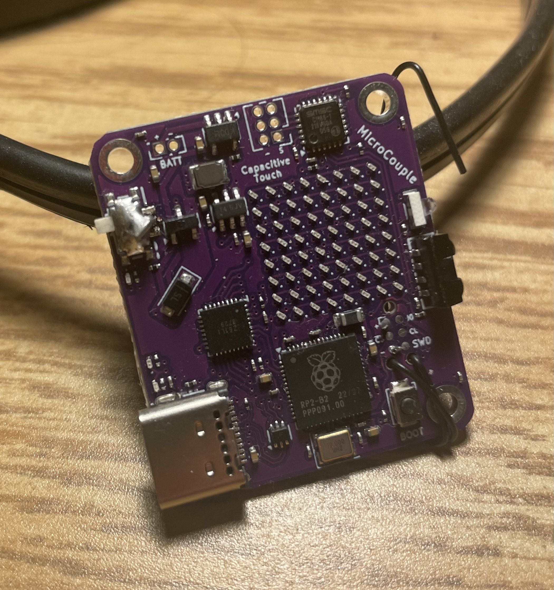

Microcouple

Overview
Microcouple is a pair of RP2040-based boards that communicate wirelessly over infrared. Each board includes an LED matrix display, capacitive touch inputs, IR transmit/receive hardware, USB-C connectivity, and on-board LiPo charging.
Notes
On my first revision, I wasn’t careful enough reading the documentation or studying the reference designs. I saw “SoC” and assumed I could just place the chip and go. That was a mistake: the QSPI lines were essential, and I needed to add external storage on those lines for it to work properly. On the second revision I also caught that the EEPROM was missing and fixed that. It was a good reminder that “system on chip” doesn’t mean “system on board.”
Contributions
- Designed the schematic and PCB in KiCad, integrating RP2040, IR transceiver, USB-C, and power management.
- Implemented the LED matrix drive and capacitive touch sensing interfaces.
- Validated IR communication between boards and basic UI interactions.
Technical Highlights
- Wireless IR Link: Hardware for bidirectional IR communication (NEC protocol at ~38 kHz).
- Display: Integrated LED matrix for animations and status feedback.
- Input: Capacitive touch pads for simple user interaction.
- Power: USB-C input with LiPo charging and battery operation.
- Firmware: Core bring-up and protocol work in progress.
GitHub
github.com/georgesleen/microcouple
Media
-
Board photo
-
Schematic (page 1)